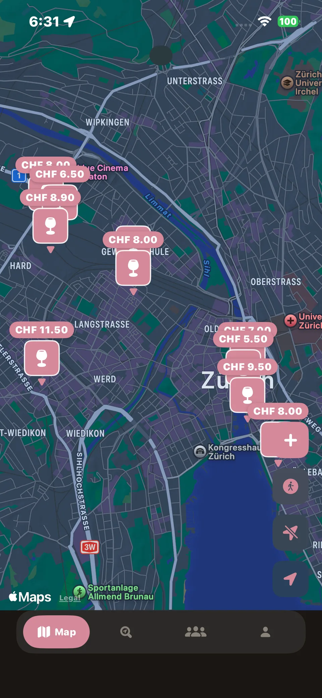
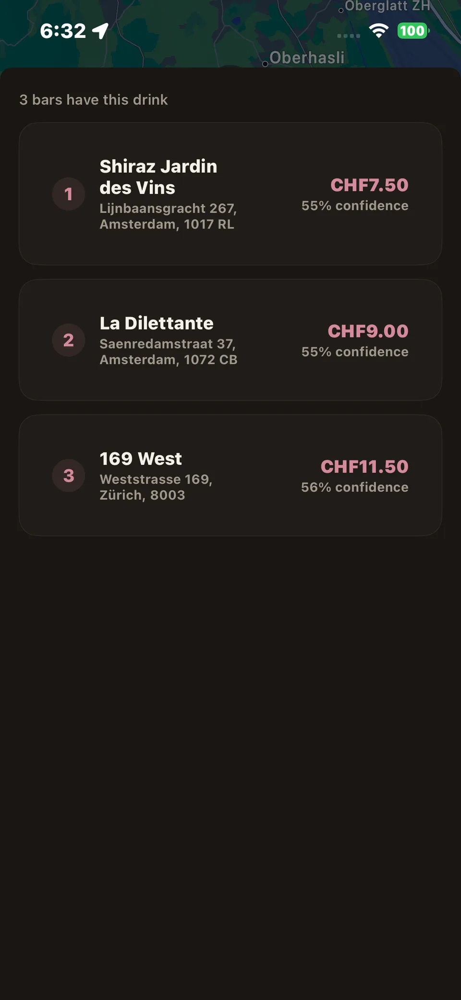
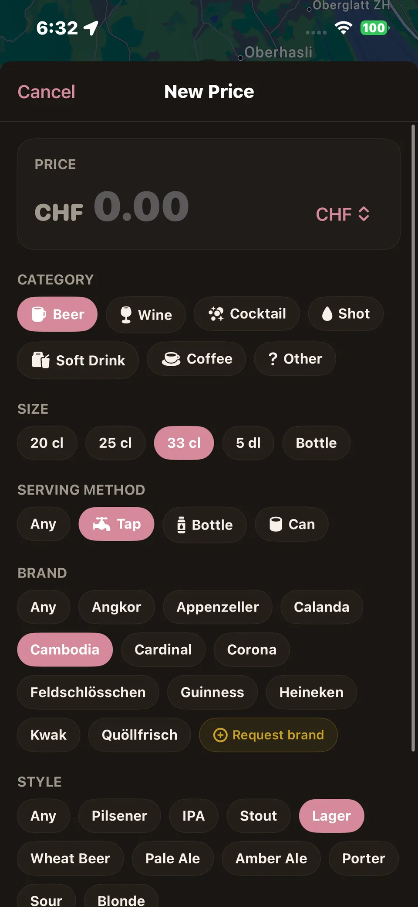
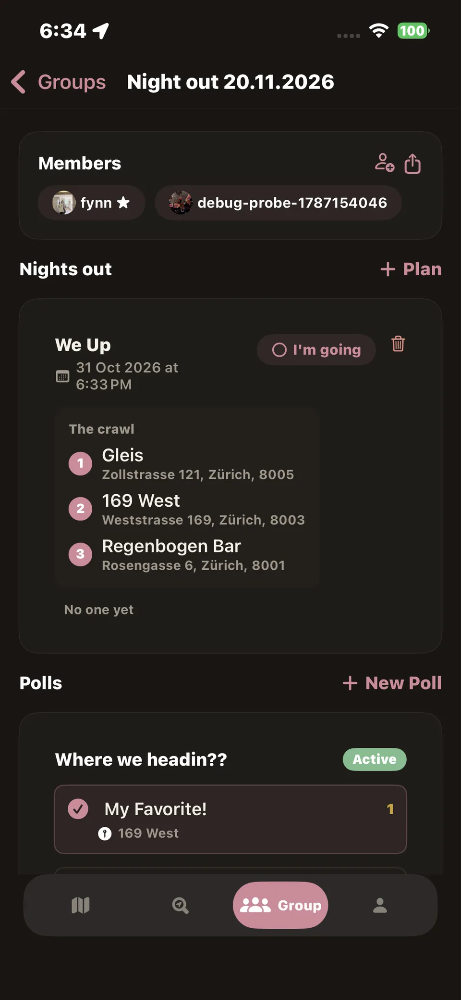

Know what you’re paying before you go.
Bartap is a crowdsourced drink price app for iOS. A pint in Zürich’s Niederdorf can cost twice what it does two tram stops away, so we track real prices reported by people who were standing at the bar. You find out before you order, not after.
Bartap isn’t on the App Store yet — I can’t afford Apple’s developer fee right now. Support the project on Ko-fi to help get it released.
See Bartap in action






Everything you need for a night out
Nothing you don’t. No feed, no ads. Just prices and the people who found them.
Find bars nearby
Map and list views, filtered by distance, vibe and whether they’ve got outdoor seating.
Compare drink prices
See what a beer, a glass of wine or a cocktail actually costs at each spot, reported by people who were there not a menu photo from three years ago.
Follow friends
See what your friends are drinking and where they’ve been hanging out lately.
Plan nights out
Start a group, run a quick poll, and land on a spot everyone’s actually happy with.
Price alerts
Set the price you’re willing to pay for your usual, and get pinged when a nearby bar hits it.
Three steps to cheaper drinks
Open the map
See bars around you with a quick price-level glance before you decide where you’re headed.
Compare prices
Check what a round actually costs at each spot beer, wine, cocktails, whatever you’re having.
Report what you paid
Takes ten seconds. Add the price you saw on the receipt or menu, and the map stays honest for the next person.
A note from the developer
I started Bartap after one too many nights where the “quick drink” turned into one too many wines.
So I built the list I wished existed: prices from people who were actually there, updated by the same people who use it. No paid placements, no “recommended” bars pushed by whoever pays us, just what a round costs, city by city.
Questions
Can’t find yours? Write to support@bartap.info.
Why not just use Google Maps?
We’ve all been there. We want to check prices beforehand, and the picture of the menu is 3 years old. You don’t know if it’s still valid or not. That’s where Bartap shines.
Is Bartap free?
Yes. Bartap is free to use and will stay free for everyone. We’re not selling placement to bars.
Where do the prices come from?
Entirely from people using the app. There’s no scraping and no menus pulled from bar websites. If a price is on the map, someone reported paying it.
How do you keep prices from going stale?
Older reports get flagged for a “still accurate?” check, and anyone can confirm or correct them. Prices that go unconfirmed for a while get pushed down in search.
Do you track my location?
Only with your permission, and only to show nearby bars or verify you were close enough to submit a price. We don’t build a location history tied to your account.
What if a bar disagrees with a price on the app?
Prices are self-reported by customers, not confirmed with venues, so they’re a reference point rather than a guarantee. See our Terms for details. Bars can flag a listing for review if something’s clearly wrong.
Why isn’t Bartap on the App Store yet?
Bartap is an iOS app, but it isn’t on the App Store yet because I can’t afford Apple’s yearly developer fee right now. You can still join the waitlist above to get notified when it launches, and if you’d like to help me afford the fee, you can donate at ko-fi.com/bartap.
Know what you’re paying.
Join the people building the shared price map for your city.
Bartap isn’t on the App Store yet. Apple charges a yearly developer fee I can’t afford right now, so the app is still in development and not publicly downloadable. If you’d like to help me afford it, you can donate at ko-fi.com/bartap. Every coffee gets the app one step closer to release.
If Bartap helped you find your favorite spot, consider tipping. Every dollar goes toward keeping the app running.
No spam. Just a heads-up when Bartap is ready where you are.